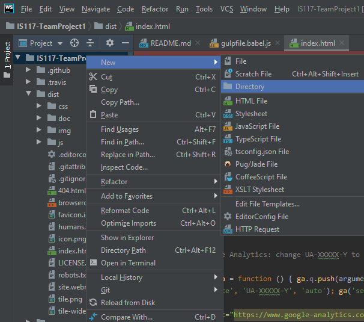

Creating Files and Folders Locally with Webstorm
Creating new files and folders is easy when working in WebStorm. In the navigation bar, right click the directory where you want to create a new file/folder, hover over “New,” and select the type of file or directory you would like to add. Selecting certain file types, such as “HTML File” will present further options such as the type of HTML file (HTML 4, HTML5, XHTML, etc.) as well as an input box to enter a name for the new file.
